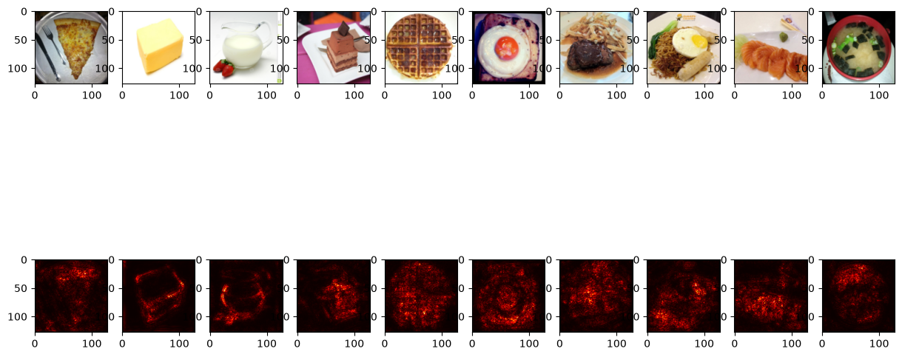
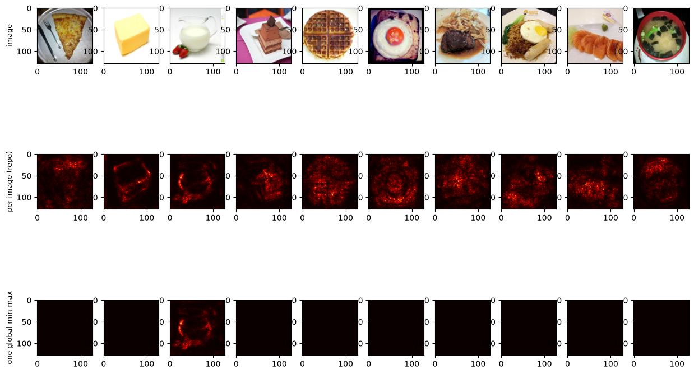
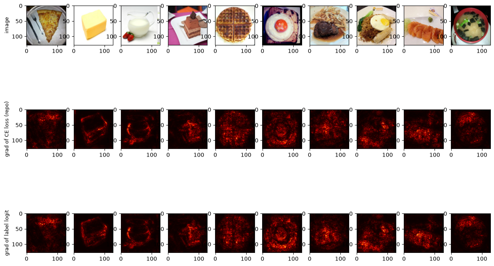
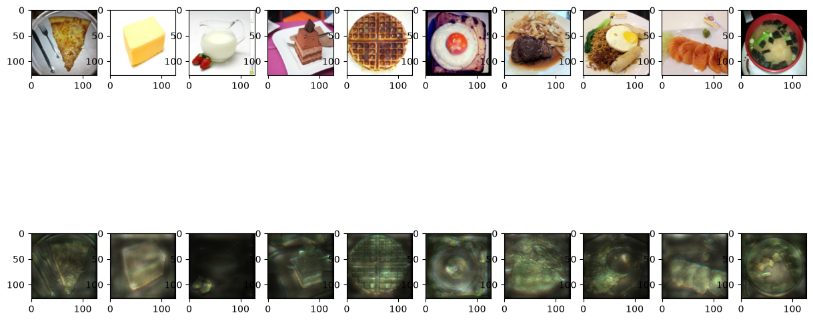
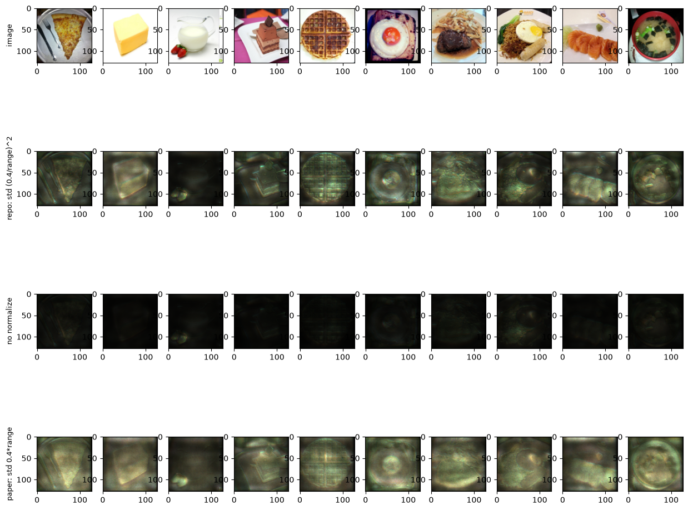
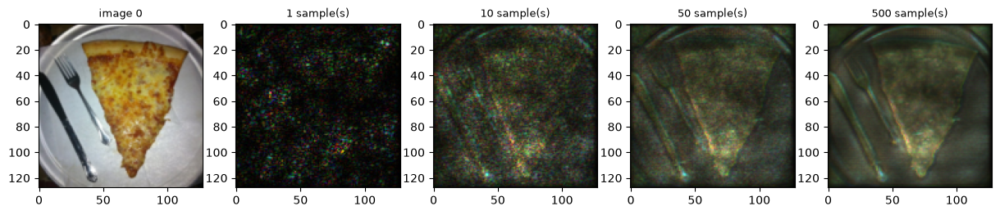
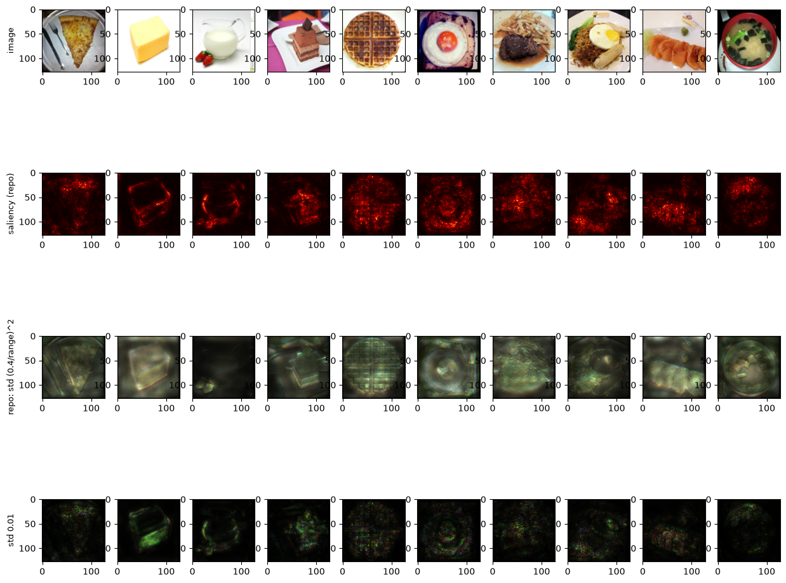

3.1 起點：saliency.png
第 0 章 0.5 節執行 explain_cnn.py 後，stdout 的第 5、6 行是 saved ./output/saliency.png 與 saved ./output/smoothgrad.png。這兩張圖是本章的主角。先看第一張：

saliency.png：上列是原圖，下列是每張圖的 saliency map（熱圖，越亮代表那個像素的梯度越大）。圖 1 的奶油塊、圖 2 的牛奶壺、圖 5 的荷包蛋，輪廓都看得出來。先只用眼睛看下列：底是黑的，亮的地方從暗紅、紅、黃到接近白（這種配色叫 hot，3.3 節會看到它在程式哪裡設定）。有幾張的形狀很清楚：圖 1 是奶油塊的方形輪廓，圖 2 是牛奶壺左側和底部的弧線，圖 5 是荷包蛋的一圈圓。其他圖的熱點比較散，例如圖 4 整個鬆餅都是細碎的亮點。
這張圖背後有幾個不容易從圖上看出來的事實，本章會一一用數字說明：
- 10 張熱圖的「亮度」看起來差不多，但畫圖之前，各張圖的梯度最大值從 3.75 × 10−4 到 1.52 × 10−17，差了 13 個數量級。看起來差不多，是因為程式把每張圖各自拉到 0–1 再畫。
- 投影片第 8 頁說這個方法是「對 output category（輸出類別）取梯度」，程式實際上是對 loss 取梯度。兩者畫出來的形狀相近，數值大小卻完全不同。
關於作業題目：投影片第 8 頁（Saliency Map，Question 5 to 9）只有一句說明「Compute the gradient of output category with respect to input image.」、一張小狗照片配上它的熱圖，以及一個參考連結；第 9 頁（Smooth Grad，Question 10 to 13）說明「在輸入圖片上隨機加雜訊、得到熱圖，就像 saliency 方法一樣」，附上論文網址和一張論文裡的圖（三張動物照片，橫向是 0%、5%、10%、20%、30%、50% 幾種雜訊程度的灰階熱圖）。Q5–13 的題目本身在 Gradescope 上，不在 repo 裡（第 0 章 0.1 節〈30 題在問什麼〉），本書不逐題作答，而是把回答這類問題需要的觀念與觀察講清楚。
3.2 對「輸入」取梯度
先回想訓練一個模型時發生的事：圖片送進模型（forward）得到 logits，和標籤一起算出 loss；接著 backward，PyTorch 從 loss 往回，一層一層用微積分的鏈鎖律（chain rule：複合函數的導數等於各段導數相乘）算出 loss 對每個權重的偏微分，也就是「這個權重增加一點點，loss 會跟著變多少」。所有權重的偏微分排在一起，就是梯度（gradient）。偏微分的符號寫成 ∂L/∂w，讀作「L 對 w 的偏微分」：分子是被影響的量，分母是被稍微改動的那個量。優化器再沿著梯度的反方向調整權重，讓 loss 變小。
Saliency map 把同一套機制用在另一個對象上：權重固定不動，改問 loss 對「輸入圖片的每個像素」的偏微分。圖片是 (3, 128, 128) 的張量，一共 49,152 個數字，每個數字都得到一個偏微分，形狀和圖片一模一樣。某個像素的偏微分絕對值很大，代表「這個像素稍微改一點，loss 就變很多」，也就是模型的判斷對這個像素很敏感。把這 49,152 個數字畫成和原圖同樣大小的熱圖，就是 saliency map（「顯著圖」）。
PyTorch 計算梯度的機制叫 autograd：只要某個張量被標記成「需要梯度」（requires_grad），PyTorch 在 forward 時就會記下它參與過的每一步運算；之後對某個純量呼叫 .backward()，PyTorch 沿著記錄往回算，把結果存進那個張量的 .grad 屬性。模型的權重預設就是「需要梯度」的，所以訓練時不必特別設定；輸入圖片預設不是，要自己打開。第 1 章 1.6 節的 torch.no_grad() 做的是相反的事：叫 PyTorch 這一段不要記錄。
圖上的 CE loss 是 cross-entropy loss（交叉熵損失），分類模型最常用的 loss。它吃 logits 和標籤：先在內部對 logits 做 softmax 變成機率，再取「標籤那一類的機率 py」的負對數 −log py（log 是以 e 為底的自然對數）。模型越有把握（py 越接近 1），loss 越接近 0。一批圖片時，PyTorch 的 CrossEntropyLoss() 預設把每張圖的 loss 取平均，得到一個純量。第 0 章 0.2 節說過模型本身不做 softmax，現在看得出這件事的意義：softmax 藏在 loss 裡面，所以對 loss 取梯度時，梯度會穿過 softmax；3.4 節會看到，正是 softmax 讓梯度幾乎消失。圖中 ∂L/∂z 那一格的式子（one-hot 是什麼、÷ 10 從哪來）也在 3.4 節推導。
3.3 compute_saliency_maps 與 saliency 的程式
Saliency 段落從一段 docstring 開始，和第 2 章的 LIME 段落一樣，是原版 notebook 的 Markdown 儲存格搬過來的：
"""## Saliency Map (Q5~9)
The partial derivative of the loss with respect to the input image shows how much each pixel matters.
"""第 76 行寫得很清楚：「loss 對輸入圖片的偏微分」。這和投影片第 8 頁的「output category 的梯度」用詞不同，3.6 節再比較兩者。接著是計算的函式：
def compute_saliency_maps(x, y, model):
model.eval()
x = x.cuda()
# we want the gradient of the input x
x.requires_grad_()
y_pred = model(x)
loss_func = torch.nn.CrossEntropyLoss()
loss = loss_func(y_pred, y.cuda())
loss.backward()
# saliencies = x.grad.abs().detach().cpu()
saliencies, _ = torch.max(x.grad.abs().detach().cpu(), dim=1)
# We need to normalize each image, because their gradients might vary in scale
saliencies = torch.stack([normalize(item) for item in saliencies])
return saliencies逐段讀：
- 第 80 行
model.eval()：每個解釋方法開頭的保險（第 1 章 1.7 節）。 - 第 81、84 行：
x是第 1 章getbatch讀進來的(10, 3, 128, 128)張量，放在 CPU 上。x.cuda()複製一份到 GPU，函式裡的x從此指向這份新的張量；第 84 行再把它標記成需要梯度。結尾的底線是 PyTorch 的命名慣例，表示「就地修改這個張量」，不回傳新的。主程式裡原本那份images不受影響，後面的 SmoothGrad 拿到的仍是乾淨的原圖。 - 第 86–89 行：forward 得到
(10, 11)的 logits，和標籤算 CE loss（10 張的平均），然後loss.backward()。這一行之後，x.grad就是 loss 對 49,152 × 10 個像素的偏微分，形狀(10, 3, 128, 128)。 - 第 92 行：三件事。
.abs()取絕對值，因為這裡只關心「影響多大」，不管方向（偏微分是正是負只代表像素變亮會讓 loss 變大還是變小）。.detach().cpu()把結果從計算記錄中切開、搬回 CPU。torch.max(..., dim=1)沿著第 1 維（R、G、B 三個通道）取最大值，三個通道併成一個，形狀變成(10, 128, 128)；torch.max指定維度時會同時回傳最大值和它的位置（第幾個通道），程式只要前者，所以用saliencies, _接。本書另外數了 10 張圖、163,840 個像素的最大值各落在哪個通道：R 36.0%、G 41.7%、B 22.4%，沒有任何像素是兩個通道平手。每一張圖都是 G 最多、B 最少，但三個通道都有份。 - 第 91 行是被註解掉的另一種寫法：不取最大值，保留三個通道。SmoothGrad 走的就是這條路（3.10 節）。
- 第 95 行：對 10 張圖一張一張呼叫
normalize，再用torch.stack疊回(10, 128, 128)。第 1 章 1.5 節說過，normalize是對傳進去的整個陣列取最大最小值，所以「誰跟誰一起正規化」由呼叫的人決定。這裡的決定是每張圖自己一組，第 94 行的註解說明了理由：「各張圖的梯度大小可能差很多」。3.5 節實測這個選擇有多重要。
注意這個函式從頭到尾沒有呼叫 model.zero_grad()。backward 時，模型權重的 .grad 也會被算出來（圖 3.2 的虛線框），而且 PyTorch 的 .grad 是累加的：不清掉的話，下一次 backward 會加在上面。本書實測連續呼叫兩次 compute_saliency_maps，最後一層 Linear（fc[3]）權重梯度的絕對值總和從 2.150 × 10−2 變成 4.299 × 10−2，剛好兩倍。這不影響熱圖，因為熱圖讀的是 x.grad，而 x 每次都是新複製的張量；權重的梯度只是白白佔著記憶體，沒有人讀。
畫圖的函式：
def saliency(model, images, labels):
saliencies = compute_saliency_maps(images, labels, model)
fig, axs = plt.subplots(2, len(images), figsize=(15, 8))
for row, target in enumerate([images, saliencies]):
for column, img in enumerate(target):
if row == 0:
# pytorch image is (channels, height, width); matplotlib wants (height, width, channels)
axs[row][column].imshow(img.permute(1, 2, 0).numpy())
else:
axs[row][column].imshow(img.numpy(), cmap=plt.cm.hot)
save_fig(fig, 'saliency.png')2 列 10 欄的畫布。第 0 列畫原圖，和第 1 章畫 images.png 一樣要先 permute(1, 2, 0) 把通道換到最後。第 1 列畫熱圖：每張熱圖只有一個通道（(128, 128)），imshow 收到二維陣列時會用 colormap（色表：把一個數值對應到一種顏色的規則）上色；第 109 行指定 plt.cm.hot，0 是黑，往上依序是紅、黃，1 接近白。熱圖已經被 normalize 拉到 0–1，所以每張圖最亮的那個像素都是接近白色的。本書另外計時，Saliency 整段只要 0.4 秒（第 0 章 0.5 節的逐段計時）：只有一次 forward 和一次 backward。
3.4 梯度為什麼小到 10−17
畫圖之前的梯度到底有多大？下面這段指令重做 compute_saliency_maps 的前半段（同樣 10 張一起算 CE loss、同樣 backward），印出 loss，以及每張圖 |x.grad| 的最大值。和第 2 章一樣在 HW09/ 裡跑（../.venv 是第 0 章 0.3 節建立的環境）；它要載入模型，需要 GPU、checkpoint.pth 與 food/：
$ ../.venv/bin/python -c "
import torch
from model import Classifier
from dataset import FoodDataset, get_paths_labels
model = Classifier().cuda()
model.load_state_dict(torch.load('checkpoint.pth')['model_state_dict'])
model.eval()
paths, labels = get_paths_labels('./food/')
images, labels = FoodDataset(paths, labels, mode='eval').getbatch(range(10))
x = images.cuda().requires_grad_()
loss = torch.nn.CrossEntropyLoss()(model(x), labels.cuda())
loss.backward()
print('loss %.6f' % loss.item())
for i, s in enumerate(x.grad.abs().amax(dim=(1, 2, 3))):
print(i, '%.3e' % s.item())
"實測輸出：
loss 0.000139 «1»
0 8.480e-07
1 3.217e-12
2 3.745e-04 «2»
3 1.370e-07
4 4.239e-08
5 1.271e-07
6 1.518e-17 «3»
7 1.505e-06
8 1.076e-09
9 8.522e-08- 110 張圖的平均 CE loss 只有 0.000139（四捨五入到 4 位是 0.0001）。模型幾乎完全確定，loss 幾乎是 0。
- 2梯度最大的是圖 2，3.745 × 10−4。它是 10 張裡唯一 p(標籤) 不到 1.0000 的（0.9986，第 1 章 1.6 節）。
- 3最小的是圖 6，1.518 × 10−17。圖 2 是它的 2.5 × 1013 倍。
amax(dim=(1, 2, 3))一次對通道、高、寬三個維度取最大值，所以印出的就是每張圖整張的最大值（和程式「先對 RGB 取最大、再看整張」得到的數字相同）。
把這一欄和第 1 章的 1 − p(標籤)（模型分給其他 10 類的機率總和）並排，再加上本書另外量的每張圖平均梯度：
| 圖 | 1 − p(標籤)（第 1 章） | |梯度| 最大值 | |梯度| 平均 |
|---|---|---|---|
| 2 Dairy product | 1.38e-03 | 3.75e-04 | 1.29e-05 |
| 7 Noodles/Pasta | 6.08e-06 | 1.51e-06 | 8.50e-08 |
| 0 Bread | 2.50e-06 | 8.48e-07 | 3.75e-08 |
| 5 Egg | 3.58e-07 | 1.27e-07 | 8.38e-09 |
| 3 Dessert | 2.38e-07 | 1.37e-07 | 5.48e-09 |
| 9 Soup | 1.19e-07 | 8.52e-08 | 3.33e-09 |
| 4 Dessert | 1.19e-07 | 4.24e-08 | 2.76e-09 |
| 8 Seafood | 0 | 1.08e-09 | 5.84e-11 |
| 1 Dairy product | 0 | 3.22e-12 | 9.47e-14 |
| 6 Meat | 0 | 1.52e-17 | 9.08e-19 |
表依 1 − p 由大到小排列。趨勢很清楚：模型越沒把握，梯度越大。最沒把握的圖 2 梯度最大，圖 7、圖 0 次之；1 − p 存成 0 的三張（圖 1、6、8），梯度也落在最底下。排序不是逐張完全一致（圖 3 的 1 − p 比圖 5 小，梯度卻略大），但大方向是跟著 1 − p 走的。
原因：CE loss 對 logits 的梯度是「機率減掉 one-hot」
第 1 章 1.8 節預告過原因，這裡把它寫成式子。設一張圖的 logits 是 z0, …, z10，softmax 後的機率是 p0, …, p10，標籤是 y。這張圖的 CE loss 是 −log py，它對每個 logit 的偏微分有一個很整齊的形式。推導只需要一行：把 softmax 代進去，−log py ＝ −zy + log(ez0 + … + ez10)；對 zj 微分，第一項只在 j = y 時貢獻 −1，第二項的導數是 ezj ÷ (ez0 + … + ez10)，正好就是 pj。合起來：
再用鏈鎖律往回接到輸入。像素 x 影響 loss 的路徑有 11 條：x 改變每一個 zj，每個 zj 再改變 L。鏈鎖律說每條路徑的效果是兩段導數相乘，總效果是各路徑相加，所以 loss 對輸入的梯度就是 11 個 logit 各自的梯度，以上面那 11 個數為權重加總：
模型有把握時，py 接近 1、其他 pj 接近 0，於是每一個權重都接近 0：標籤那一項是 py − 1 ≈ −(1 − py)，其他項是很小的 pj。不管 ∂zj/∂x 本身多大，乘上一個接近 0 的權重，梯度就接近 0。而這些權重的大小，正是由 1 − py 決定的，這就是上表兩欄一起變小的原因。順帶一提，p 接近 1 時 −log p ≈ 1 − p，（p = 1 − ε、ε 很小時，−log(1 − ε) ≈ ε），所以每張圖的 CE loss 也幾乎就等於 1 − p（例如圖 2 是 1.38 × 10−3、圖 0 是 2.50 × 10−6）。
還有兩個細節：
- 批次平均讓每張圖的梯度再縮小 10 倍。
CrossEntropyLoss()預設取 10 張的平均，平均就是每張的 loss 乘上 1/10，所以每張圖拿到的梯度是「單獨算」時的十分之一。本書實測圖 0 單獨算時梯度最大值是 8.565 × 10−6，在 10 張的批次裡是 8.480 × 10−7。這個係數對 10 張圖都一樣，各自正規化之後就消失了，不影響熱圖。（兩個數字不是剛好 10 倍，因為單張和批次算出的 logit 在小數第 3 位就有差異，第 1 章〈同一張圖，logit 的小數第 3 位會變〉。） - 1 − p 是 0，梯度卻不是 0。圖 1、6、8 的 p(標籤) 在 float32 裡存成剛好 1（第 1 章 1.6 節），照上面的式子，標籤那一項的權重 py − 1 應該是 0，但實測的梯度仍有 10−9 到 10−17。本書推測（沒有另外查證）是因為
CrossEntropyLoss在內部直接從 logits 算 log-softmax（用上面那一行式子 −zy + log Σ ezk 算出 log py，而不是先把 py 算成 float32 再取 log），其他類別的 pj 雖然小到不影響 py 的顯示，本身仍是非零的極小值，加總起來就是那一點點梯度。本書事後把這三張圖批次計算時的 softmax 機率印出來：p(標籤) 在 float32 裡確實剛好是 1.0，但其他 10 類的機率都不是 0，加總分別是圖 1 2.8 × 10−11、圖 6 3.4 × 10−17、圖 8 4.9 × 10−9。這三個數的排序和梯度最大值的排序（圖 1 3.2 × 10−12、圖 6 1.5 × 10−17、圖 8 1.1 × 10−9）相同，梯度最小的圖 6，其他類別的機率也最小。這支持上面的推測：梯度來自那些被 float32 的 1.0 吃掉、但本身不是 0 的 pj。（PyTorch 內部怎麼算 log-softmax 本書沒有去讀原始碼。）
3.5 為什麼每張圖要各自正規化
圖 3.3 已經暗示了答案。如果第 95 行不是一張一張呼叫 normalize，而是把 10 張熱圖當成一個陣列一起做一次 min-max，整批最大的值（圖 2 的 3.75 × 10−4）會變成 1，其他圖的值都要跟它比。本書把兩種做法畫在一起：

第三列只有圖 2 看得到紅黃色的熱點（牛奶壺左側的輪廓），其他 9 張是全黑的。一起正規化時，各張圖的最大值會是：
| 圖 | 2 | 7 | 0 | 3 | 5 | 9 | 4 | 8 | 1 | 6 |
|---|---|---|---|---|---|---|---|---|---|---|
| 一起正規化後的最大值 | 1.00 | 4.02e-03 | 2.26e-03 | 3.66e-04 | 3.39e-04 | 2.28e-04 | 1.13e-04 | 2.87e-06 | 8.59e-09 | 4.05e-14 |
圖 2 是整批的最大值，定義上就是 1。第二亮的圖 7，最亮的像素也只有 0.004，在 hot 色表上跟 0 一樣是黑的。（這些數字大約就是 3.4 節的最大值除以圖 2 的 3.75 × 10−4，例如圖 7：1.51 × 10−6 ÷ 3.75 × 10−4 ≈ 4.0 × 10−3，手算；整批的最小值幾乎是 0，所以減掉它幾乎沒有影響。）
這就是第 1 章 1.8 節預告的「最沒把握的圖 2 為什麼是例外」：圖 2 的 1 − p 比其他圖大了兩個數量級以上，梯度也就大到在共同的尺度上看得見；其他 9 張的模型太有把握，梯度相對圖 2 都小到可以忽略。所以程式的選擇很合理：saliency map 要回答的是「這一張圖裡，哪些像素比較敏感」，各自正規化保留了每張圖內部的相對高低。但代價也要記住：各自正規化之後，不同圖之間的亮度不能比較。圖 3.1 裡圖 6 和圖 2 的熱點一樣亮，實際上圖 6 的梯度是圖 2 的 4 × 10−14 倍。
3.6 投影片說「output category」，程式用 loss
投影片第 8 頁的說明是「Compute the gradient of output category with respect to input image」，直譯是「對輸出類別取梯度」；程式（以及第 76 行的 docstring）對的是 loss。這兩個不是同一個量。用 3.4 節的式子看：
- 對 loss 取梯度（程式）：∂L/∂x ＝ Σj (pj − 1[j = y]) · ∂zj/∂x，11 個 logit 梯度的加權和，權重在模型有把握時全部接近 0。
- 對標籤那一類的 logit 取梯度：∂zy/∂x，只看一個分數，不經過 softmax。這是「output category 的梯度」最直接的讀法，第 5 章的 Integrated Gradients 用的也是這個量。
本書把第 88–89 行換成「取出 10 張圖各自標籤那一格的 logit，加總後 backward」（示意：idx = labels.cuda().unsqueeze(1)，再 model(x).gather(1, idx)、.sum().backward()；gather 要求索引和 logits 同樣是二維，所以標籤要先從 (10,) 變成 (10, 1)），其他步驟（取絕對值、對 RGB 取最大、各自正規化）不變。結果每張圖的梯度最大值變成：
| 圖 | 0 | 1 | 2 | 3 | 4 | 5 | 6 | 7 | 8 | 9 |
|---|---|---|---|---|---|---|---|---|---|---|
| 對 loss（程式） | 8.48e-07 | 3.22e-12 | 3.75e-04 | 1.37e-07 | 4.24e-08 | 1.27e-07 | 1.52e-17 | 1.51e-06 | 1.08e-09 | 8.52e-08 |
| 對標籤 logit | 2.044 | 1.402 | 1.743 | 2.403 | 1.683 | 1.251 | 3.029 | 1.685 | 2.333 | 4.896 |
| 兩張熱圖的相關係數 | 0.862 | 0.637 | 0.969 | 0.931 | 0.820 | 0.880 | 0.726 | 0.974 | 0.828 | 0.924 |
對 logit 取梯度時，10 張圖的最大值都在 1.25 到 4.90 之間，不再有 10−17 這種數量級的差距：沒有 softmax 夾在中間，模型再有把握，logit 對像素的敏感度也不會消失。最後一列是兩種熱圖（各自正規化之後）逐像素算的相關係數（Pearson correlation：衡量兩組數字「一起變高、一起變低」的程度，1 是完全同步，0 是毫無關係），10 張在 0.637 到 0.974 之間。

看圖：第三列整體比第二列亮、熱點更分散，圖 5 荷包蛋的圓形輪廓在 logit 版更清楚。但兩列的大輪廓是一致的，相關係數大多在 0.8 以上，差最多的是圖 1（0.637）和圖 6（0.726）。
為什麼數量級差這麼多，形狀卻相近？回到式子：loss 的梯度是 11 個 ∂zj/∂x 的加權和，權重的「大小」決定了整體的數量級（所以小到 10−17），而熱圖各自正規化之後，數量級被消掉，剩下的「形狀」主要由權重最大的那一項決定。如果那一項剛好是標籤那一項（係數 py − 1），形狀就會接近 ∂zy/∂x；如果其他類別的項也有份量，形狀就會偏離。哪一張是哪種情況，本書沒有逐張拆解，相關係數只告訴你「偏離了多少」。
兩種做法回答的是不同的問題：對 loss 取梯度問「哪些像素動一下，模型對正確答案的信心變最多」，會受 softmax 飽和（p 已經頂在 1 附近、logit 再怎麼變機率都幾乎不動）的影響；對 logit 取梯度問「哪些像素動一下，這一類的分數變最多」，和其他類別無關。本書不判定哪一個「才是對的」。作業的程式用前者，寫作業時就照程式的定義回答；但讀投影片和其他資料時要知道，「saliency map」這個名字底下可能是兩種不同的量。這一條也列在教學大綱〈讀 code 不盡信文件〉的第 6 項。
3.7 SmoothGrad：加雜訊，算 500 次再平均
Saliency map 有一個常被提到的問題：熱圖充滿細碎的亮點（圖 3.1 的圖 4 就是一片雜點），看不太出形狀。SmoothGrad（Smilkov 等人 2017 年的論文）的想法很直接：在圖上加一點隨機雜訊，算一次梯度；換一組雜訊，再算一次；重複很多次，把這些梯度平均起來。真正重要的區域在每次都會亮，偶然出現的雜點會被平均掉。程式的 docstring 也是這樣說的：
"""## Smooth Grad (Q10~13)
Randomly add noise to the image, compute a heatmap each time, and average them.
The average is more robust to noisy gradients.
ref: https://arxiv.org/pdf/1706.03825.pdf
"""「隨機加雜訊、每次算一張熱圖、再平均；平均起來比較不受梯度雜訊影響。」第 117 行的網址就是投影片第 9 頁附的同一篇論文（arXiv 1706.03825）。計算的函式：
def smooth_grad(x, y, model, epoch, param_sigma_multiplier):
model.eval()
mean = 0
sigma = param_sigma_multiplier / (torch.max(x) - torch.min(x)).item()
smooth = np.zeros(x.cuda().unsqueeze(0).size())
for i in range(epoch):
# generate random noise (the original passes sigma**2 as the std)
noise = x.new_empty(x.size()).normal_(mean, sigma**2)
x_mod = (x + noise).unsqueeze(0).cuda()
x_mod.requires_grad_()
y_pred = model(x_mod)
loss_func = torch.nn.CrossEntropyLoss()
loss = loss_func(y_pred, y.cuda().unsqueeze(0))
loss.backward()
# like the method in saliency map
smooth += x_mod.grad.abs().detach().cpu().numpy()
smooth = normalize(smooth / epoch) # don't forget to normalize
# smooth = smooth / epoch # try this line to answer the question
return smooth和 compute_saliency_maps 不同，smooth_grad 一次只處理一張圖：x 是 (3, 128, 128)，y 是那張圖的標籤（0 維張量）。逐段讀：
- 參數名稱
epoch其實是「取樣次數」，和訓練時的 epoch 無關；主程式傳 500。param_sigma_multiplier是雜訊大小的倍率，傳 0.4。 - 第 124 行：
sigma = 0.4 ÷ (這張圖的最大值 − 最小值)。第 1 章 1.4 節看過，像素值落在 0–1，所以分母接近 1，sigma 接近 0.4。這一行是 3.8 節的主題。 - 第 125 行：準備一個全 0 的累加器，形狀
(1, 3, 128, 128)，型別是 NumPy 的 float64。x.cuda().unsqueeze(0)只是為了拿到這個形狀（unsqueeze(0)在最前面加一個長度 1 的批次維度），那份搬到 GPU 的複本隨即被丟掉。 - 第 128 行：產生雜訊。
x.new_empty(x.size())建一個和x同形狀、同型別、同裝置（這裡是 CPU）的空張量，.normal_(mean, std)就地填入常態分佈（高斯分佈，最常見的鐘形亂數分佈）的亂數，平均是mean、標準差（亂數離平均值有多散；3.8 節細說）是第二個參數。注意程式傳的是sigma**2，第 127 行的註解也特別說明：「原版把 sigma 的平方當成標準差傳進去」。 - 第 129–130 行：原圖加雜訊，加上批次維度變成
(1, 3, 128, 128)，搬上 GPU，標記需要梯度。x_mod每一圈都是新的張量，所以它的.grad不會跨圈累加。 - 第 132–135 行：和 saliency 相同的 forward、CE loss、backward，只是批次大小是 1（
y.cuda().unsqueeze(0)把標籤也變成長度 1），沒有「除以 10」。 - 第 138 行：取絕對值，保留三個通道，轉成 NumPy 加進累加器。這裡沒有像第 92 行那樣對 RGB 取最大值。
- 第 139 行：除以取樣次數得到平均，再
normalize。傳進去的是整個(1, 3, 128, 128)陣列，所以三個通道是一起正規化的：整張圖最大的那個值（不管在哪個通道）變成 1。 - 第 140 行是被註解掉的替代寫法：只取平均、不正規化。註解說「試試這一行來回答問題」，這是留給作業題目用的，3.10 節實測。
和 compute_saliency_maps 一樣，這個函式也沒有 model.zero_grad()，500 次 backward 的權重梯度全部累加在模型上，但沒有人讀它。
畫圖的函式：
def smoothgrad(model, images, labels):
smooth = []
for i, l in zip(images, labels):
smooth.append(smooth_grad(i, l, model, 500, 0.4))
smooth = np.stack(smooth)
fig, axs = plt.subplots(2, len(images), figsize=(15, 8))
for row, target in enumerate([images, smooth]):
for column, img in enumerate(target):
axs[row][column].imshow(np.transpose(np.asarray(img).reshape(3, 128, 128), (1, 2, 0)))
save_fig(fig, 'smoothgrad.png')第 146–147 行用 zip 一張一張取出圖和標籤，每張取樣 500 次、雜訊倍率 0.4。第 148 行把 10 個 (1, 3, 128, 128) 疊成 (10, 1, 3, 128, 128)。第 153 行對兩列用同一個寫法：reshape(3, 128, 128) 把多出來的那個長度 1 的維度去掉（原圖本來就是這個形狀，不受影響），np.transpose(..., (1, 2, 0)) 把通道換到最後，效果和 saliency 裡的 permute(1, 2, 0) 相同。imshow 收到的是 (128, 128, 3) 的彩色圖，所以不會套 colormap，三個通道的梯度直接當成 R、G、B 顯示。
這一段是 explain_cnn.py 最慢的：10 張 × 500 次，一共 5,000 次單張的 forward + backward。第 0 章 0.5 節的逐段計時，SmoothGrad 整段 24.1 秒，平均一張圖約 2.4 秒；Saliency 只要 0.4 秒。

smoothgrad.png：上列原圖，下列是 SmoothGrad 的結果（彩色，因為三個通道各自保留）。食物的輪廓和紋理都看得出來；圖 2 例外，幾乎全黑。和圖 3.1 比，下列不再是黑底紅黃的熱圖，而是偏暗、帶綠灰色調的彩色圖。形狀比 saliency map 清楚得多：披薩（圖 0，類別是 Bread）的三角形、奶油塊、蛋糕的層次、鬆餅的格子、荷包蛋的圓、生魚片的條紋、湯碗的圓圈都認得出來。圖 2 是例外：幾乎整張都是暗的，只有左下角（草莓的位置）一小塊亮。
為什麼偏綠灰？圖 3.6 那一次的數值沒有存下來，本書用 3.10 節同樣的程式原樣變體（固定 torch.manual_seed(0)，不是同一批雜訊）量了正規化後三個通道各自的平均值：10 張合起來 R 0.243、G 0.259、B 0.190；逐張看，除了圖 1（R 0.338、G 0.336，幾乎相同）之外都是 G 最高，B 則每一張都最低，但三者差得不多。三個通道差不多亮，看起來就是灰；G 稍微多一點、B 少一點，就偏綠（偏黃綠）。整體平均只有 0.2–0.3，所以是暗的。這和 3.3 節 saliency 的「最大值落在哪個通道」G 最多、B 最少是同一個方向。至於模型為什麼對 G 通道比較敏感，本書沒有答案。
要注意的是，這張圖每次重跑都不一樣：雜訊用的是 PyTorch 的亂數，explain_cnn.py 只固定了 NumPy 的種子（第 2 章 2.10 節的 np.random.seed(16)），沒有固定 PyTorch 的，第 0 章 0.6 節已經實測過。所以你自己跑出來的圖會和圖 3.6 有細微差異，大輪廓應該相同。
看起來 SmoothGrad 達到了它的目的。但這張圖其實藏著一件更重要的事，要先從雜訊有多大說起。
3.8 雜訊有多大：程式與論文差在哪
先把術語講清楚。常態分佈是最常見的「鐘形」亂數分佈；標準差（standard deviation，std）衡量亂數離平均值有多散，大約 68% 的亂數會落在平均值 ± 1 個標準差之內；變異數（variance）是標準差的平方。PyTorch 的 Tensor.normal_(mean, std) 第二個參數是標準差，不是變異數。
論文把雜訊的大小定義成「雜訊程度 × 像素值的範圍」：
程式做了兩件和論文不同的事：乘變成除（第 124 行），而且再平方一次（第 128 行把 sigma**2 當標準差傳進去）。原版 notebook 就是這樣寫的，本 repo 照搬，只在第 127 行加了註解提醒。代進這 10 張圖的數字（範圍是每張圖自己的最大值減最小值）：
| 圖 | 最大值 − 最小值 | 程式的 sigma | 程式實際的標準差（sigma²） | 論文式 0.4 × 範圍 |
|---|---|---|---|---|
| 0 | 0.9961 | 0.4016 | 0.1613 | 0.3984 |
| 1 | 0.9490 | 0.4215 | 0.1777 | 0.3796 |
| 6 | 1.0000 | 0.4000 | 0.1600 | 0.4000 |
其他 7 張的實際標準差在 0.160–0.178 之間，論文式在 0.38–0.40 之間。手算比例：圖 6 是 0.16 ÷ 0.40 = 40%，圖 0 是 0.1613 ÷ 0.3984 ≈ 40%，圖 1 是 0.1777 ÷ 0.3796 ≈ 47%。所以實際加的雜訊大約只有論文的 40%（各張在 40% 上下）。
這兩個公式在這 10 張圖上數字差不多，只是因為範圍剛好接近 1：除以 1 和乘以 1 一樣，平方則讓 0.4 變成 0.16。如果像素值的範圍不是 0–1，兩者會差得非常遠。例如範圍是 0–255 的圖，論文式的標準差是 0.4 × 255 = 102，程式的是 (0.4 ÷ 255)² ≈ 2.5 × 10−6（手算），而且範圍越大，程式加的雜訊反而越小，方向和論文相反。這是教學大綱〈讀 code 不盡信文件〉的第 3 項。
3.9 加了雜訊，模型全部認錯
目錄頁說：「加了雜訊之後梯度卻大了好幾個數量級」。數字是這樣的：圖 0 在 saliency 裡的梯度最大值是 8.48 × 10−7（單獨算是 8.565 × 10−6，3.4 節），SmoothGrad 取樣 500 次、正規化之前的平均梯度最大值是 0.256，是批次值的約 30 萬倍、單獨算的約 3 萬倍（手算）。直覺的解釋是「雜訊讓模型沒那麼有把握，CE 的梯度就不再接近 0」。這個方向對，但程度遠超過「沒那麼有把握」。先看標準差 0.16 的雜訊下，模型把圖 0 認成什麼。下面的指令對圖 0 產生 500 張加雜訊的圖（標準差用程式的公式），統計模型預測成哪一類；同樣在 HW09/ 裡跑，需要 GPU：
$ ../.venv/bin/python -c "
import torch
from model import Classifier
from dataset import FoodDataset, get_paths_labels
model = Classifier().cuda()
model.load_state_dict(torch.load('checkpoint.pth')['model_state_dict'])
model.eval()
paths, labels = get_paths_labels('./food/')
images, labels = FoodDataset(paths, labels, mode='eval').getbatch(range(10))
torch.manual_seed(0)
x = images[0]
std = (0.4 / (x.max() - x.min()).item()) ** 2
noisy = x + torch.randn(500, 3, 128, 128) * std
with torch.no_grad():
pred = model(noisy.cuda()).argmax(dim=1).cpu()
print('std %.4f' % std)
print(torch.bincount(pred, minlength=11).tolist())
"這段和 smooth_grad 有兩個差別：torch.manual_seed(0) 固定了 PyTorch 的亂數種子（第 2 章 2.10 節講過種子的意思，這裡是 PyTorch 自己的那一條數列），讓結果可以重現；torch.randn(500, 3, 128, 128) * std 一次產生 500 份標準差為 std 的雜訊（randn 是平均 0、標準差 1 的常態亂數，乘上 std 就把標準差變成 std），而不是像 smooth_grad 那樣每圈 normal_ 一次。兩者的雜訊不是同一批，但分佈相同。torch.bincount(pred, minlength=11) 數 0–10 每一類各被預測了幾次。實測輸出：
std 0.1613 «1»
[0, 0, 0, 0, 0, 0, 0, 0, 0, 0, 500] «2»- 1標準差 0.1613，和 3.8 節表上圖 0 的「程式實際的標準差」相同。
- 211 個位置依序是類別 0（Bread）到 10（Vegetable/Fruit）。500 張全部被判成類別 10，Vegetable/Fruit；正確答案 Bread 是 0 次。
不只圖 0。本書對 10 張圖各產生 500 個樣本，不論用程式的標準差還是論文式的標準差，每一張的 500 個樣本都被判成 Vegetable/Fruit。這 10 張圖裡沒有任何一張是 Vegetable/Fruit（第 1 章 1.3 節：類別 4、7、10 沒有圖）。用程式的標準差時，標籤那一類的平均 logit 全部是負的：
| 圖 | 0 | 1 | 2 | 3 | 4 | 5 | 6 | 7 | 8 | 9 |
|---|---|---|---|---|---|---|---|---|---|---|
| 原圖的標籤 logit（第 1 章） | 10.333 | 19.785 | 7.808 | 9.011 | 12.215 | 12.385 | 22.956 | 11.447 | 13.015 | 14.118 |
| 加雜訊後，500 個樣本的平均標籤 logit | −16.60 | −7.92 | −10.50 | −4.81 | −3.65 | −9.91 | −11.32 | −16.83 | −8.84 | −10.95 |
這個模型對雜訊有多敏感
標準差 0.16 聽起來不大（像素值範圍是 0–1），為什麼模型完全認不出來？本書用更小的雜訊測了模型的耐受度：每張圖 100 個樣本，10 張的平均正確率：
| 雜訊標準差 | 0.005 | 0.01 | 0.02 | 0.03 | 0.05 | 0.08 | 0.1 | 0.1600–0.1777（程式） | 0.38–0.40（論文式） |
|---|---|---|---|---|---|---|---|---|---|
| 正確率 | 1.00 | 1.00 | 0.87 | 0.54 | 0.43 | 0.11 | 0.01 | 0 | 0 |
標準差 0.02 時就開始認錯，0.1 時幾乎全錯。這個模型只在乾淨的圖上訓練過，對逐像素獨立（每個像素各抽各的亂數）的高斯雜訊非常敏感。程式用的 0.16，已經遠在它能承受的範圍之外。（最後兩欄是上面「500 個樣本全部判成 Vegetable/Fruit」的結果。）
再看單一樣本的細節（圖 0，固定 torch.manual_seed(0)，每一列是一個加了雜訊的樣本）：
| 雜訊標準差 | p(Bread) | CE loss | |梯度| 最大值 |
|---|---|---|---|
| 0（原圖，單獨算） | 1.0000 | 2.5e-06 | 8.6e-06 |
| 0.01 | 1.0000 | 3.6e-06 | 1.1e-05 |
| 0.05 | 0.6467 | 0.436 | 1.16 |
| 0.1613（程式） | 0.0000 | 29.6 | 1.03 |
| 0.3984（論文式） | 0.0000 | 27.7 | 0.38 |
讀這張表：
- 標準差 0.01 時，模型仍然 100% 確定，梯度也還是 10−5 的量級，和原圖差不多。
- 標準差 0.05 時，p(Bread) 掉到 0.6467，梯度最大值一下子跳到 1.16，比原圖大了五個數量級。只要模型不再飽和在 p ≈ 1，CE loss 的梯度就不再接近 0：3.4 節式子裡的權重 pj − 1[j = y] 不再是接近 0 的數。
- 標準差 0.1613（程式用的）時，p(Bread) 是 0.0000，CE loss 是 29.6。loss 是 −log p，29.6 代表 p(Bread) 大約是 e−29.6，也就是 10−13 的量級（手算）。模型不只是「不太確定」，而是完全確定這不是麵包。
所以「加了雜訊之後梯度大了好幾個數量級」的真正原因是：SmoothGrad 的 500 個樣本，在這個模型眼裡全部是 Vegetable/Fruit。程式平均的，是 500 張「被認錯的圖」上、CE loss 約 30 的梯度。
那 SmoothGrad 的圖還代表什麼
這直接影響圖 3.6 該怎麼讀。SmoothGrad 原本的構想是「在原圖附近取樣，模型對這些樣本的判斷和原圖差不多，把梯度裡的雜點平均掉」。在這個模型上，前提不成立：樣本並不在模型認為「這是麵包」的範圍裡。用 3.4 節的式子推論（本書沒有逐項量測）：py ≈ 0 時，標籤那一項的權重 py − 1 ≈ −1；Vegetable/Fruit 那一項的權重是它自己的機率 pVF。本書事後量了這個前提（程式的標準差、每張圖 500 個樣本、torch.manual_seed(0)）：p(Vegetable/Fruit) 的平均值，10 張裡 8 張是 1.0000，圖 1 是 0.9996、圖 2 是 0.9990，最低的單一樣本也有 0.9693（圖 2）；標籤的平均機率在 10−6 到 10−12 之間。Vegetable/Fruit 幾乎拿走了全部的機率，所以梯度大約就是 ∂zVF/∂x − ∂zy/∂x，混合了「什麼讓標籤分數上升」和「什麼讓 Vegetable/Fruit 分數下降」兩件事。
因此，圖 3.6 不能解讀成「模型判斷這是 Bread 的依據」：產生它的 500 個樣本裡，模型沒有一次判斷成 Bread。它顯示的是：在這些被認錯的雜訊圖上，哪些位置的像素對「正確答案的 loss」最敏感。圖上看得到食物的輪廓和紋理，代表梯度確實集中在那些區域，但這和 3.6 節的 saliency map 回答的不是同一個問題。至於這張圖「正確」該怎麼讀，本書沒有答案；能確定的只有它是怎麼算出來的，以及它的前提在這個模型上不成立。換成雜訊小到模型仍然認得出來的標準差（上表大約 0.01 以下），結果會是什麼樣子，3.12 節實測。
3.10 彩色、不 normalize、論文式：三種變體並排
本書把 smooth_grad 的兩個地方各改一次，和程式原樣並排。改法：
- 不 normalize：照第 140 行註解要你試的，把第 139 行換成
smooth = smooth / epoch，只平均、不正規化。 - 論文式標準差：雜訊的標準差改成 0.4 × 範圍，其餘不變。
⚠ 三種變體都先 torch.manual_seed(0) 再產生雜訊，所以和圖 3.6（explain_cnn.py 沒有固定 PyTorch 種子的那一次）不是同一批雜訊。下圖第二列「程式原樣」和圖 3.6 的下列會有細微差異，比較時要拿同一張圖裡的各列互相比，不要拿第二列去和圖 3.6 逐點比。

torch.manual_seed(0)，和圖 3.6 不是同一批雜訊。第三列，不 normalize。幾乎全黑，只剩隱約的輪廓；圖 2 的草莓比較亮。每張圖 500 次平均後的值域：
| 圖 | 0 | 1 | 2 | 3 | 4 | 5 | 6 | 7 | 8 | 9 |
|---|---|---|---|---|---|---|---|---|---|---|
| 最小值 | 2.94e-03 | 8.36e-04 | 1.25e-03 | 1.48e-03 | 1.40e-03 | 1.91e-03 | 1.30e-03 | 2.75e-03 | 1.38e-03 | 1.85e-03 |
| 最大值 | 0.259 | 0.098 | 0.496 | 0.162 | 0.138 | 0.167 | 0.176 | 0.354 | 0.129 | 0.208 |
全部小於 1，所以 imshow 不會截斷任何值（第 1 章 1.5 節：彩色圖的浮點數超出 0–1 才會被截斷），只是最大值只有約 0.1–0.5，整張就很暗。值得注意的是，10 張的亮度在同一個數量級：加了雜訊之後，每張的梯度都落在 0.1–1 的量級，不再有 saliency 那種 10−17 的差距。這又是 3.9 節的結果：10 張圖在雜訊下都被認錯，loss 都很大，梯度就都不小。
第四列，論文式標準差。整體比第二列亮、輪廓更模糊，雜訊大了一倍多，平均出來的圖也更「糊」。圖 2 在兩種標準差下都只有草莓那一小塊是亮的。3.9 節說過，這兩種標準差下模型都 100% 認錯，所以論文式並沒有讓 SmoothGrad 的前提成立。
第二列為什麼是彩色的。回到第 138–139 行：SmoothGrad 對三個通道各自累加梯度、一起正規化，沒有像 saliency 那樣對 RGB 取最大值，所以結果是 (3, 128, 128) 的彩色圖，imshow 直接當成 RGB 顯示。某個位置偏紅，代表那裡 R 通道的平均梯度相對比較大；偏綠就是 G 通道。這是本 repo（和原版 notebook）的選擇；投影片第 9 頁附的論文圖則是灰階的。
3.11 取樣次數：1、10、50、500
SmoothGrad 的「平均」要平均多少次才夠？本書對圖 0 分別取樣 1、10、50、500 次（同樣是程式的標準差、同樣先 torch.manual_seed(0)）：

1 次取樣（等於「加一次雜訊的 saliency」）是一片彩色雜點，看不出形狀；10 次開始看得到披薩三角形與刀叉的輪廓；50 次和 500 次差不多，500 次最平滑。和 500 次的結果逐像素比，平均絕對差是：1 次 0.1563、10 次 0.0585、50 次 0.0257，越多次越接近。
正規化之前的數值也有同樣的趨勢。本書在另一次量測（和圖 3.8 不是同一批雜訊）裡記錄了圖 0 平均梯度的最大值：1 次 0.902、10 次 0.311、50 次 0.271、500 次 0.256。取樣越多，個別樣本的極端值被平均掉，最大值就往下收斂。這也是 3.9 節開頭「0.256」的出處。
3.12 雜訊小到模型認得出來時
3.9 節留下一個問題：如果雜訊小到模型仍然判斷正確，SmoothGrad 會畫出什麼？耐受度表上，標準差 0.01 時 10 張圖的正確率是 1.00，單一樣本的 p(Bread) 也還是 1.0000（3.9 節的表）。本書把 smooth_grad 的雜訊標準差直接設成 0.01，其他不變（500 次、CE loss、三通道一起正規化），和程式原樣並排：

torch.manual_seed(0)，和圖 3.6 不是同一批雜訊。看得到的：第四列很暗，帶著紅綠藍的細碎雜點，不像第三列那樣有清楚、平滑的食物輪廓。它的形狀反而接近第二列的 saliency map：圖 1 奶油塊的方形輪廓（偏綠、比較亮）、圖 2 牛奶壺的弧線、圖 5 荷包蛋的圓。
用數字確認：把兩種 SmoothGrad 都對 RGB 取最大值、各自正規化，再和 saliency map 逐像素算相關係數（3.6 節用過的 Pearson）：
| 圖 | 0 | 1 | 2 | 3 | 4 | 5 | 6 | 7 | 8 | 9 |
|---|---|---|---|---|---|---|---|---|---|---|
| 標準差 0.01 vs saliency | 0.937 | 0.446 | 0.932 | 0.736 | 0.959 | 0.925 | 0.953 | 0.939 | 0.857 | 0.909 |
| 程式原樣 vs saliency | 0.176 | 0.363 | 0.377 | 0.357 | 0.502 | 0.485 | 0.379 | 0.300 | 0.429 | 0.298 |
標準差 0.01 時，10 張裡有 8 張和 saliency map 的相關係數在 0.85 以上；程式原樣的 SmoothGrad 和 saliency map 只有 0.18–0.50。也就是說：雜訊小到模型還認得出來時，SmoothGrad 畫出來的大致就是 saliency map 本身（再平滑一點）；程式用的雜訊畫出的那張「好看」的圖，和 saliency map 是很不一樣的東西，這和 3.9 節「樣本全被認錯」的結論一致。
這不代表標準差 0.01 才是「正確」的設定：雜訊這麼小，平均掉雜點的效果也有限（第四列仍然很碎）。論文的建議範圍是對別的模型量出來的；這個只看過乾淨圖片的模型，承受不了能讓熱圖變平滑的雜訊量。本書只呈現這個取捨，不判定該選哪一個。
現在的做法
- 只對輸入取梯度：用
torch.autograd.grad(loss, x)直接拿到輸入的梯度，不會寫進權重的.grad；或者先把模型參數的requires_grad關掉。這樣就不必擔心本章看到的權重梯度累加。 - 固定 PyTorch 的種子：SmoothGrad 用 PyTorch 產生雜訊，要可重現就在呼叫前
torch.manual_seed(...)，光設np.random.seed管不到它。 - 雜訊大小用標準差直接指定，並先確認模型在這個雜訊下還認得出原圖（本章的耐受度表就是一個簡單的檢查）。
- 一次送一批樣本：500 個雜訊樣本可以疊成幾個批次一起 forward/backward，不必一張一張跑；CE loss 用
reduction='sum'就不會被批次平均縮小。 - 用現成的工具：目錄頁〈先說在前面〉提到的 Captum 有
Saliency（對指定類別target的輸出取梯度，也就是 3.6 節的 logit 版）與NoiseTunnel（包在任何解釋方法外面，Captum 把這類方法稱為 attribution，歸因；nt_type='smoothgrad'，雜訊大小由stdevs直接給標準差）。
本章重點
- Saliency map 用和訓練相同的 forward + backward，但讀的是輸入圖片的
.grad，不是權重的。程式取絕對值、對 RGB 取最大值、每張圖各自 normalize，用hot色表畫。 - 程式對 CE loss 取梯度：∂L/∂x ＝ Σj (pj − 1[j = y]) ∂zj/∂x。模型幾乎 100% 確定，權重全部接近 0：10 張的平均 loss 0.000139，梯度最大值從 3.75 × 10−4（圖 2）到 1.52 × 10−17（圖 6），大致跟著 1 − p 走。
- 10 張一起正規化的話只有圖 2 看得見，其他 9 張全黑；各自正規化保留每張圖內部的相對高低，但不同圖之間的亮度不能比。
- 投影片說「output category 的梯度」。改成對標籤 logit 取梯度，最大值變成 1.25–4.90，熱圖形狀和 loss 版相近（相關係數 0.637–0.974）。兩者是不同的量，回答不同的問題。
- SmoothGrad 每張圖取樣 500 次、一次一張，整段 24.1 秒。雜訊標準差是 (0.4 ÷ 範圍)²（
normal_的第二個參數是標準差），論文是 0.4 × 範圍；這 10 張圖上約為論文的 40%。 - 不論哪一種標準差，10 張圖的 500 個雜訊樣本全部被判成 Vegetable/Fruit（模型在標準差 0.1 時正確率就只剩 0.01）。「加雜訊後梯度大了好幾個數量級」是因為樣本全被認錯、CE loss 約 30，所以 SmoothGrad 的圖不能讀成「模型判斷標籤的依據」。
- SmoothGrad 保留三個通道、一起正規化，所以結果是彩色的；不 normalize 時最大值只有約 0.1–0.5，整張很暗但沒有被截斷。取樣 50 次已經和 500 次相近。
- 雜訊標準差改成 0.01（模型仍 100% 判對）時，SmoothGrad 和 saliency map 的相關係數 10 張裡有 8 張在 0.85 以上；程式原樣只有 0.18–0.50。程式用的雜訊畫出的圖，和 saliency map 是不同的東西。
- 兩個函式都沒有
model.zero_grad()，權重梯度會累加（不影響熱圖）；smoothgrad.png每次重跑都不同，因為沒有固定 PyTorch 的種子。
自我測驗
1. 把第 95 行改成 saliencies = normalize(saliencies)（10 張一起正規化），saliency.png 的下列會變成什麼樣子？為什麼？
只有圖 2 看得到熱點（牛奶壺左側的輪廓），其他 9 張全黑（圖 3.4 第三列）。一起正規化時，整批最大的值是圖 2 的梯度，變成 1；其他圖的梯度至少小兩個數量級，正規化後最亮的也只有 0.004（圖 7），在 hot 色表上是黑的。圖 2 是唯一 p(標籤) 不到 1.0000 的圖（0.9986），CE loss 的梯度由 1 − p 決定，所以它的梯度遠大於其他圖。
2. 圖 6 的 p(標籤) 在 float32 裡剛好是 1，照「py − 1」算，梯度應該是 0。為什麼實測仍有 1.52 × 10−17？
梯度不只來自標籤那一項，而是 11 項 (pj − 1[j = y]) ∂zj/∂x 的加總。py 顯示成 1，不代表其他類別的 pj 剛好是 0；它們可以是非零的極小值，小到加進 py 時被 float32 的精度吃掉，但在梯度的加總裡仍留下一點點。本書事後印出圖 6 其他 10 類的 pj：加總 3.4 × 10−17，不是 0，量級和梯度最大值 1.5 × 10−17 相近（3.4 節）。
3. 同學說：「SmoothGrad 的雜訊太小了，改成論文的 0.4 × 範圍，模型就會在原圖附近取樣，熱圖才有意義。」這句話哪裡不對？
方向反了。程式的標準差（約 0.16）已經讓 10 張圖的 500 個樣本全部被判成 Vegetable/Fruit；論文式（約 0.4）更大，實測同樣 100% 被判成 Vegetable/Fruit。這個模型在標準差 0.1 時正確率就只剩 0.01。要讓樣本留在「模型仍然認得出原圖」的範圍，雜訊要更小（耐受度表上大約 0.01 以下），而不是更大。論文式的雜訊在其他模型上可能合適，但在這個只看過乾淨圖片的模型上不合適。
4. 照第 140 行的註解，把第 139 行換成 smooth = smooth / epoch（不 normalize），smoothgrad.png 會整張變白（被截斷）還是變暗？
變暗。500 次平均後每張圖的值域大約是 10−3 到 0.1–0.5（圖 2 最大 0.496），全部小於 1，imshow 不會截斷任何值；但最大值離 1 很遠，整張就很暗，只剩隱約的輪廓（圖 3.7 第三列）。而且 10 張的亮度差不多，因為加了雜訊之後每張的梯度都在同一個數量級。
5. 為什麼 saliency.png 的熱圖是黑紅黃的，smoothgrad.png 卻是彩色的？
compute_saliency_maps 第 92 行用 torch.max(..., dim=1) 對 R、G、B 取最大值，每張熱圖只剩一個通道 (128, 128)，imshow 收到二維陣列就套用第 109 行指定的 plt.cm.hot 色表。smooth_grad 第 138 行保留了三個通道，第 139 行三個通道一起正規化，第 153 行轉成 (128, 128, 3) 給 imshow，三維陣列被當成 RGB 彩色圖，不套色表。
延伸閱讀
- Simonyan, Vedaldi, Zisserman, 2013, Deep Inside Convolutional Networks: Visualising Image Classification Models and Saliency Maps：saliency map 的經典論文，對類別分數（而不是 loss）取輸入的梯度，對 RGB 取最大絕對值。
- Smilkov, Thorat, Kim, Viégas, Wattenberg, 2017, SmoothGrad: removing noise by adding noise：SmoothGrad 的原始論文（
explain_cnn.py第 117 行與投影片第 9 頁附的網址），雜訊程度的定義與不同雜訊程度的比較圖都在裡面。 - PyTorch — torch.autograd：
requires_grad、backward、.grad的累加規則，以及torch.autograd.grad。 - PyTorch — CrossEntropyLoss：輸入是 logits、內部含 log-softmax、
reduction預設'mean'。 - PyTorch — Tensor.normal_：參數是
mean與std（標準差）。 - Captum — NoiseTunnel：現成的 SmoothGrad 實作，
stdevs參數直接指定雜訊的標準差。